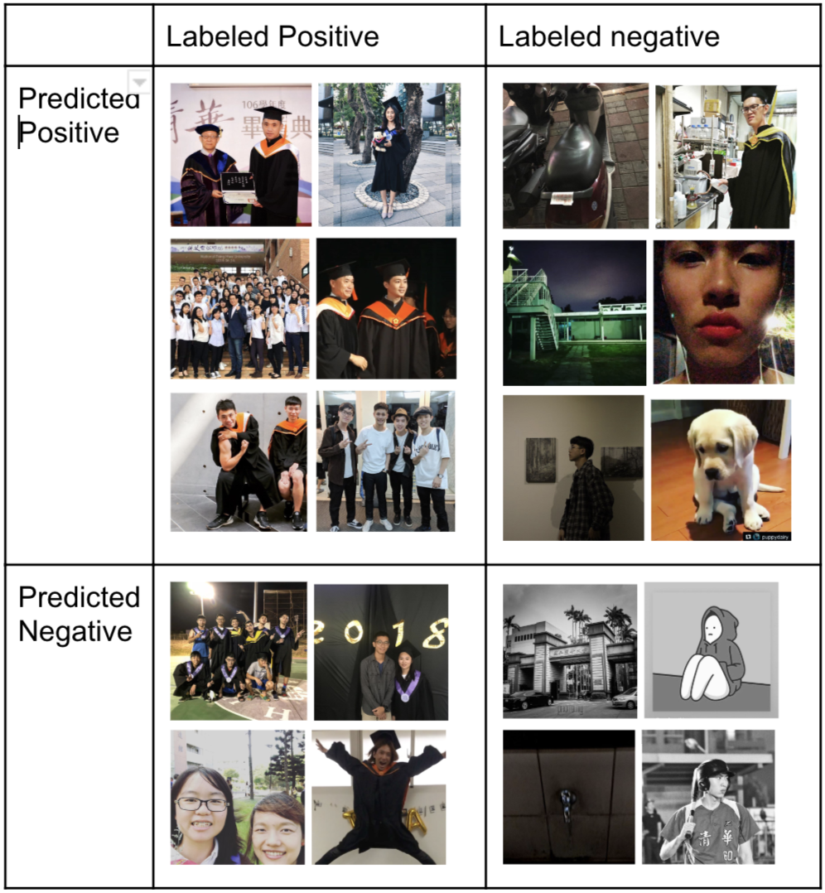

Insight-gram

Project Background : Course Project
Project date : 2018.6
Project duration : 1 month
Project course : Data Science
Algorithm and tool used: TFIDF, Word2Vec, Sklearn, KMeans, CNN, Word Cloud
A group project
What's the issue
As a senior student, we noticed that as events such as the graduation ceremony approaches, we tend to see more posts relative to the event on the social media. Also, the emotion of such posts are obvious. Not only do events such as the graduation ceremony have this tendency, but we can find similar phenomenon around mid-term exam period, sports seasons and more.
At the same time a new student, say a exchange student, may find it difficult to engage to the local community due to the lack of knowledge about what's going around.
What if we could visualize the hot topics that the univsrsity community cares about along with their emotion form the posts on social media and provide them to the newcomers? We believe it would helps them fit in the community with less effort.
How we address the issue
We crawled and extracted keywords from posts with location tags on Instagram, since trends on instagram satifies the endemic and transient characteristics. We then cluster posts with similar keywords together. At the same time, we utilize CNN to predict the emotion of the photos. After the analysis, we used word cloud to visualize our findings.
What we find
The text analysis results shows that schools in proximity tend to have common interests. By extracting keywords and cluster the posts containing similar kewords together, we successfully extracts reignal hot topics.
The image emotion classification shows that our model tends to classify dim pictures as negative in emotion, while some of them are actually joyful pictures taken in the night. This is the part we should put further efforts on.
The mechanism can be further developed to help people new to the place fit in the community easier.
What's my role in the project
I was mainly in charge of the data analysis of this work. From word embedding and clustering for text analysis to using Keras to implement CNN for photo emotion classification, I processed data crawled by my teammate and output findings to another teammate, she then vistualized and presented them. We also discussed every challenges we met together.